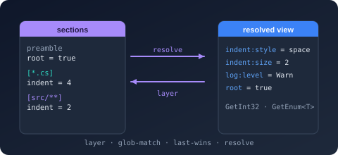
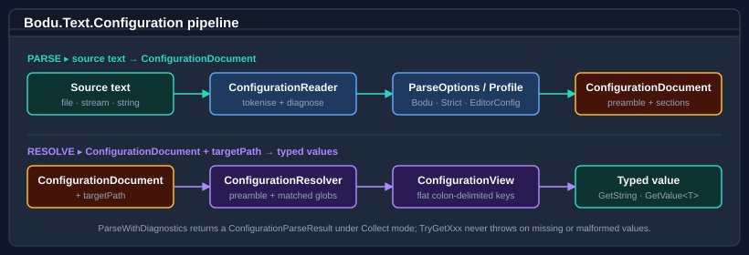

Bodu.Text.Configuration

Bodu.Text.Configuration is the configuration-layering package of the Bodu suite, and one half of the
Configuration topic. It reads a single text file in the
familiar INI / EditorConfig shape — preamble, named sections, key = value properties — and projects it into a
flattened, target-aware view keyed by colon-delimited configuration keys. The result drops directly into the same
shape Microsoft.Extensions.Configuration expects, without taking a dependency on that package: the bridge lives in
the sibling Bodu.Extensions.Configuration.Text library.
The package is intentionally narrow: parse a document, optionally collect diagnostics, resolve it for a target path,
and read typed values back out. No reflection, no dynamic, no schema, no global state.
Core mental model

Configuration runs as a four-stage pipeline: the reader tokenises the source text and produces a
ConfigurationDocument — a sealed type that inherits the read-only
IniDocumentBase model; the resolver layers the document's preamble
and matching glob-anchored sections in source order to produce a ConfigurationView for one target path; the getter
API on the view returns typed values (GetString, GetInt32, GetInt64, GetBoolean, GetEnum<T>, and
GetValue<T> for any ISpanParsable<T>). Every stage is opt-in: parse without resolving when you just want the
document, resolve without typed accessors when you only need raw strings.
A configuration file is not a snapshot of a single object graph — it is a layered description of how properties change as a target path moves through a directory tree. The library's job is to collapse those layers down to the right answer for a specific target.
The shape of the library
The package contains five concept groups, all in the Bodu.Text.Configuration namespace.
Document and view
The minimal happy-path: Parse → Resolve → GetXxx.
| Type | Purpose |
|---|---|
| ConfigurationDocument | First-class document type returned by Parse, ParseWithDiagnostics, Load; also hosts Save over strings, streams, paths, and text readers. Inherits the read-only IniDocumentBase model. |
| ConfigurationView | Resolved, flattened snapshot for one target path; implements IEnumerable<KeyValuePair<string, string?>>. |
| ConfigurationExtensions | Extension methods on IniDocumentBase and IniEntry — including the Resolve(targetPath) projection and ConfigurationPath. |
| ConfigurationResolvedEntry | Per-key provenance in a resolved view: winning SectionPattern, SourceLocation, canonical Key and Value. |
| ConfigurationParseResult | The output of ParseWithDiagnostics — carries both the document and any diagnostics collected during the parse. |
Profiles and options
Four named profiles cover the common use cases; everything else is composed from the per-stage option types.
| Type | Purpose |
|---|---|
| ConfigurationProfile | Enum: Bodu (default), EditorConfigCompatible, Strict, Relaxed. |
| ConfigurationParseOptions | Reader behaviour: inline-comment mode, duplicate-key / -section handling, diagnostic mode, length limits, key options. Static Bodu / EditorConfigCompatible / Strict / Relaxed presets. |
| ConfigurationResolveOptions | Resolver behaviour: PathRoot, MissingPathRootMode, ApplyPreambleProperties, UnsetValueMode, PathComparison, KeyOptions. |
| ConfigurationWriteOptions | Save behaviour: encoding, newline style, blank-line policy, property formatting. |
| ConfigurationKeyOptions | Key behaviour: segment separators (default . and :), mapping (DotToColon / Colon / Identity), case sensitivity. |
Keys
The library distinguishes the raw key as authored in the file from the canonical colon-delimited form.
| Type | Purpose |
|---|---|
| ConfigurationKey | Read-only struct with RawKey, Path (canonical colon-delimited form), Segments, and CaseSensitive. Static Parse / TryParse factories. |
| ConfigurationKeyMapping | Enum: DotToColon (default), Colon, Identity. |
Diagnostics
When DiagnosticMode is Collect, the parser runs to completion and lists every recoverable issue.
| Type | Purpose |
|---|---|
| ConfigurationDiagnostic | Immutable diagnostic (sealed class): severity, code, message, source location. |
| ConfigurationDiagnosticSeverity | Enum: Info, Warning, Error. |
| ConfigurationDiagnosticCode | Enum identifying the diagnostic category — 16 stable codes plus None (duplicate key, unterminated section, unbalanced brace, …). |
| ConfigurationDiagnosticMode | Enum: Throw (default), Collect, Ignore. |
| ConfigurationParseException | Thrown on a fatal parse; carries Diagnostic (primary) and the full Diagnostics array. |
| ConfigurationSourceLocation | 1-based line / column metadata pointing into the source text; None is the unknown location. |
Resolution modes
| Type | Purpose |
|---|---|
| ConfigurationInlineCommentMode | Enum: Disabled (EditorConfig), WhitespaceIntroduced (default), Always. |
| ConfigurationSectionHeaderMode | Enum: Lenient (default), Strict, AllowTrailingInlineComment — trailing content after ]. |
| ConfigurationUnsetValueMode | Enum: TreatAsLiteral (default), RemoveEffectiveValue (EditorConfig). |
| ConfigurationMissingPathRootMode | Enum: UseEmptyRoot (default), Throw. |
Profile presets at a glance
| Profile | Inline comments | Section headers | Duplicate keys | Diagnostics | Preamble in resolve | Missing path root | Unset semantics |
|---|---|---|---|---|---|---|---|
Bodu (default) |
WhitespaceIntroduced | Lenient | LastWins | Throw | Applied | UseEmptyRoot | Literal |
EditorConfigCompatible |
Disabled | Strict | LastWins | Throw | Not applied | Throw | Removes value |
Strict |
Disabled | Strict | Disallowed | Throw | Applied | Throw | Removes value |
Relaxed |
WhitespaceIntroduced | Lenient | LastWins | Collect | Applied | UseEmptyRoot | Literal |
Profiles split across two option types: the parse columns (inline comments, section headers, duplicate keys,
diagnostics) come from ConfigurationParseOptions; the resolve columns (preamble, missing
path root, unset) come from ConfigurationResolveOptions. Both bags are
init-only-property classes, so the presets are starting points, not contracts — compose a custom bag and override only
what needs to differ.
Note
Under EditorConfigCompatible, preamble properties are dropped wholesale during resolve (ApplyPreambleProperties = false). The well-known root key is handled by the reader, not by special-casing it in the resolver, so the
resolved view simply contains no preamble keys at all.
Common scenarios
| Scenario | Reach for |
|---|---|
| Parse a file with default behaviour | ConfigurationDocument.Parse(text) or Load(path) |
| Parse a user-authored file without halting on errors | ConfigurationDocument.ParseWithDiagnostics(text, ConfigurationParseOptions.Relaxed) |
| Resolve effective settings for one source file | doc.Resolve("src/Foo.cs").GetString("format:indent:style") |
| Read a typed value with a fallback | view.GetInt32("format:indent:size", fallback: 4) |
Read any ISpanParsable<T> |
view.GetValue<double>("limits:cpu:threshold") |
| EditorConfig-strict parsing | ConfigurationDocument.Parse(text, ConfigurationParseOptions.EditorConfigCompatible) |
| Reject any input the parser cannot prove canonical | ConfigurationParseOptions.Strict |
| Use dots in keys but project to colon-delimited form | (default — ConfigurationKeyMapping.DotToColon) |
| Round-trip a document through save | ConfigurationDocument.Save(doc, path) |
| Pick the profile from configuration at runtime | ConfigurationParseOptions.For(profile) |
| Plug into IConfigurationBuilder | See Bodu.Extensions.Configuration.Text. |
File grammar at a glance
# A preamble property — applies before any section opens.
root = true
# A section: the header is a glob pattern matched against the resolver's target path.
[*.cs]
format.indent.style = space
format.indent.size = 4
# Later sections override earlier sections for any path they both match (last-wins).
[src/**/*.{cs,csproj}]
format.indent.size = 2
The grammar matches EditorConfig verbatim with two Bodu-specific extensions:
- Inline comments are recognised when introduced by whitespace (
key = value # comment) under the defaultBoduprofile. Set the profile toEditorConfigCompatibleto disable them. - Key mapping projects dotted keys (
logging.level.default) to colon-delimited configuration keys (logging:level:default) for direct interoperability withMicrosoft.Extensions.Configuration. Both forms work as lookup inputs on the view; the canonical stored form is the colon-delimited one.
Where to go next
- Core concepts — vocabulary: document vs view, profile, parse/resolve/write options, key mapping, glob pattern, preamble, target path, diagnostic mode, unset.
- Getting started — install + minimal samples for parse-resolve-read, profile presets, diagnostics, round-trip save.
- Bodu.Text.Configuration guides — worked patterns: parsing and profiles, views and resolution, and diagnostics.
- Bodu.Extensions.Configuration.Text —
IConfigurationBuilderintegration, options binding, file probing. - Bodu.Text.Configuration API reference — full type-by-type docs.
- Bodu.Text.Ini — the standalone INI library, for codec-only INI reading and editing.
- Configuration topic — this package and its sibling Bodu.Extensions.Configuration.Text side by side.